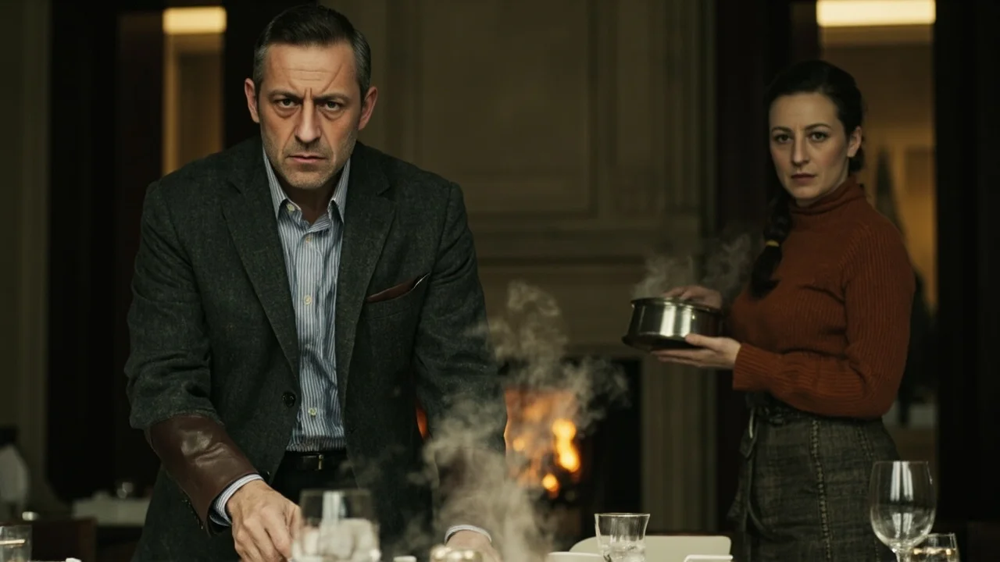
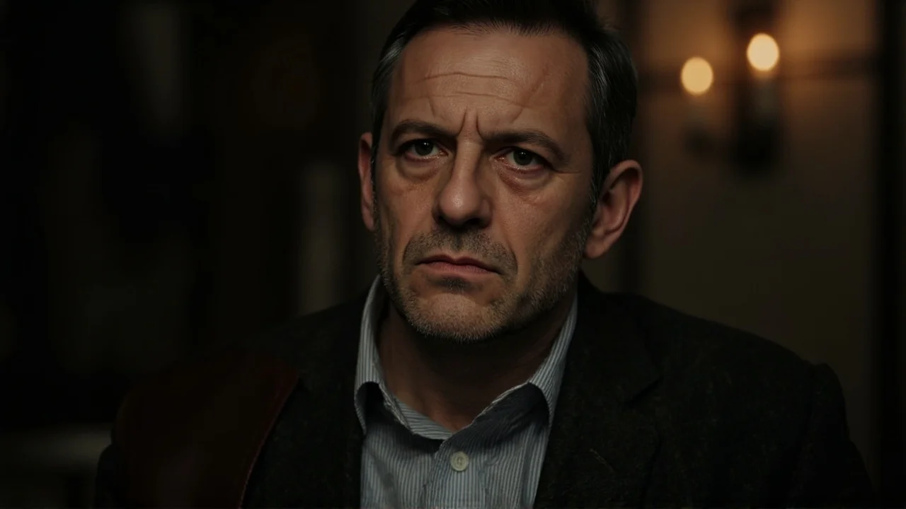
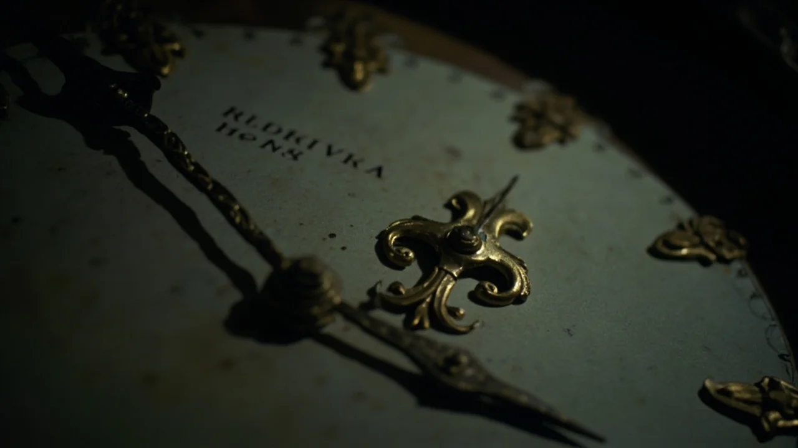
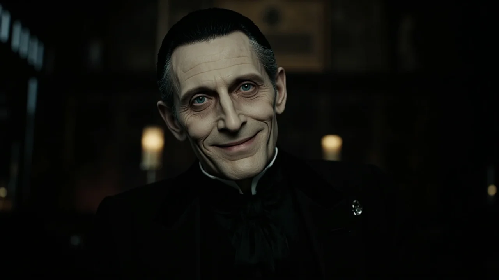
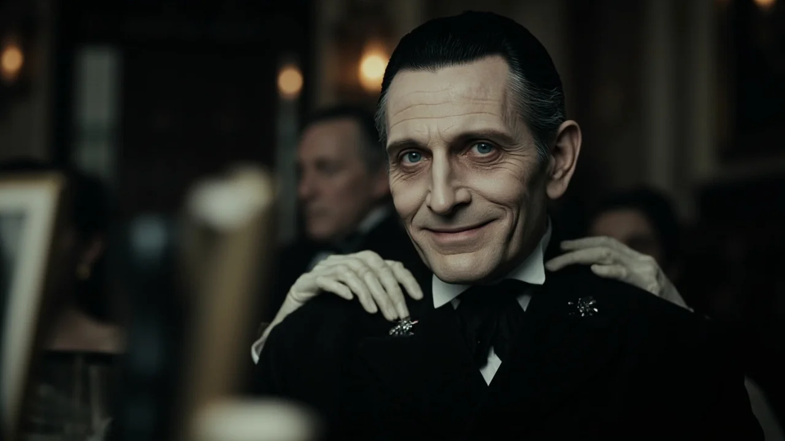

El viento del norte sacudía los postigos de La Solana, el caserón de piedra donde la familia se reunía cada invierno. En el comedor grande, Julián alineaba los cubiertos de postre con ademanes mecánicos, intentando no pensar. Las encinas ardían en el hogar despidiendo un olor acre a resina que no templaba las baldosas frías de barro.
—Falta uno, Julián —advirtió Clara desde el otro extremo de la mesa de caoba.
Sostenía la sopera de caldo humeante entre las manos. A sus cuarenta y dos años, su rostro reflejaba el desgaste de meses en hospitales, pero sus ojos pardos conservaban una terquedad antigua.
—Somos once en la casa, Clara —replicó él, sin alzar la cabeza—. El tío Tomás duerme en la salita y los primos no vendrán con este temporal. Ya no tiene sentido mantener las manías de madre. Murió en octubre.
—Ella decía doce. Siempre doce.
Clara se acercó a la alacena y sacó un plato hondo de loza cartujana ribeteado en azul cobalto, una copa de cristal tallado y cubiertos de plata con las iniciales de los abuelos. Con un ademán litúrgico, colocó el servicio en la cabecera opuesta a la lumbre, ante una silla de cuero repujado que nadie ocupaba jamás.
—Doce platos —susurró—. Las ventanas trancadas antes de medianoche y la tranca del portón levantada. Esas fueron sus últimas palabras en paliativos. Me hizo jurarlo.
Julián consultó su reloj de plata: las once y veinte.
—Supercherías. En cuanto pasen las fiestas firmaré las arras para vender la finca a los compradores de la capital. No pienso arruinarme manteniendo este caserón por una costumbre absurda.
—No la venderás sin mi firma —soltó Clara, mirándolo con rencor—. Tú solo entiendes de tasaciones; no sabes qué sostiene esta casa.
El resto de la familia fue tomando asiento entre murmullos apagados. El tío Tomás arrastraba los pies con una toquilla al hombro; dos primos lejanos discutían en voz baja y los más jóvenes miraban sus teléfonos, frustrados por la falta de cobertura. Nadie se atrevía a rozar la cabecera desierta. El servicio de loza azul brillaba bajo la lumbre temblorosa de las seis velas de cera virgen.
La cena transcurría con una pesadez asfixiante cuando sonó el primer golpe.

No fue una sacudida del vendaval. Fueron tres nudillos secos y firmes que retumbaron en la madera de roble del portón principal con cadencia milimétrica.
El comedor quedó mudo en el acto. Dos de los primos detuvieron las cucharas en el aire. Clara alzó la vista hacia el corredor en penumbra, empalideciendo hasta las sienes.
—Será algún vecino atascado en el puente —dijo Julián, tratando de serenar su voz—. Voy a ver.
—No abras —suplicó ella, levantándose de golpe—. El portón estaba sin cerrojo. Si fuera un caminante extraviado, habría empujado el picaporte. Sabe perfectamente que le esperamos.
Julián atravesó el zaguán, encendió la lámpara de latón y abrió la pesada hoja. Una ráfaga gélida arremolinó nieve sobre las losas de piedra.
En el umbral aguardaba un hombre.
Era excepcionalmente alto y enjuto, vestido con un abrigo negro de paño decimonónico y sombrero de ala estrecha entre guantes de piel fina. Tenía la piel cenicienta y tirante como el pergamino, ojos grises sin brillo y una sonrisa desmesurada, paciente y helada.
—Buenas noches, Julián —saludó con una voz aterciopelada que flotó sobre el aullido del viento—. Disculpe el retraso. El desfiladero estaba impracticable, pero la puntualidad nunca fue mi mayor virtud.
Julián retrocedió medio paso, con el pulso latiéndole en las sienes.
—¿Quién es usted? El pueblo queda a siete kilómetros y no he oído ningún motor.
—Su madre me esperaba cada año —respondió el hombre, entrando sin pedir permiso y dejando tras de sí un rastro de nieve que no se fundía con el calor—. Doña Remedios era rigurosa con sus deudas. Lamento su partida, aunque su ausencia no anula los compromisos de su sangre.
El forastero cruzó el vestíbulo y penetró en el comedor. El rumor apagado de la familia se cortó como un hilo quebrado.

—Buenas noches a todos —dijo, inclinando la cabeza con refinada reverencia—. Me alegra ver reservado mi cubierto. La loza azul siempre fue mi predilecta.
Sin dudar, apartó la silla de nogal de la cabecera y tomó asiento ante el plato desierto. Se despojó de los guantes, revelando unos dedos largos y grisáceos, y depositó su sombrero sobre el mantel. Su pelo negro azabache, con mechones cenicientos en las sienes, permanecía peinado hacia atrás con pulcritud intacta.
Julián se colocó a su lado, hirviendo de desconcierto.
—No sé qué broma es esta, pero le exijo que se marche.
El forastero desdobló la servilleta de hilo con parsimonia.
—Poca hospitalidad para quien salvó a los suyos en el invierno negro de mil novecientos veintiocho. Su bisabuelo Ramón no era tan quisquilloso cuando los establos estaban vacíos y la peste mataba a sus reses. Vino a buscarme al bosque, Julián. Descalzo y de rodillas. Y yo cumplí mi parte. Las cosechas de esta finca no volvieron a malograrse jamás.
El tío Tomás comenzó a temblar en su asiento, incapaz de apartar la vista de los cubiertos del desconocido.
—Mi bisabuelo murió hace más de medio siglo —atajó Julián.
—El tiempo no mide igual para quienes no comemos pan —repuso el forastero, llenando su copa de vino tinto—. Doña Remedios lo entendió muy bien. Durante sesenta años me sirvió este cubierto cada Nochebuena: once platos para los vivos y uno para mí, con la silla vacía para comprar doce meses de tregua. Pero ese engaño requería un guardián vivo. Y al morir su madre, el pacto exige cobrar la deuda.
El hombre inclinó el torso hacia adelante; su sonrisa se estiró aún más, tensando la piel de sus pómulos.
—Sé lo que oculta tu americana, Julián: la falsificación de la firma materna con la que pensabas despojar a Clara del olivar para saldar las pérdidas de tu empresa en quiebra.
Julián palideció hasta quedarse sin respiración.

—Y conozco tu culpa secreta, Clara —añadió el forastero, volviendo el cuello sin mover los hombros—. La noche en que desconectaste el respirador de la anciana durante tres minutos enteros, rezando para que su corazón se rindiera y acabara tu cautiverio. No querías verla sufrir, te decías. Pero lo que ansiabas era tu libertad.
Clara se cubrió el rostro con ambas manos y rompió a llorar, deshecha. Los parientes se miraban entre sí con espanto y recelo.
En ese instante preciso, un chasquido metálico resonó en el vestíbulo. El gran reloj de péndulo se clavó en seco a las once y cuarenta y cinco. En el hogar, las llamas de encina se congelaron en formas cenicientas y mudas, perdiendo al instante su calor.
Clara retrocedió contra el aparador y su hombro derribó una hilera de marcos de plata. Al mirar las fotos familiares que retrataban bodas y reuniones campesinas, soltó un grito de espanto.
En la boda de los bisabuelos de mil novecientos veintiocho, entre las sombras de los robles del fondo, asomaba nítida la figura del hombre de negro. En la comunión de Julián en mil novecientos ochenta y cinco, el mismo rostro pálido sonreía detrás del párroco. Y en la última fotografía navideña de doña Remedios, sus manos huesudas descansaban sobre el respaldo de su butaca.
Había estado allí siempre, esperando en cada rincón oscuro.
—¡Basta! ¡Fuera de esta casa! —rugió Julián, arrojándose hacia la puerta del zaguán.
Abrió el portón de par en par, dispuesto a huir a la ventisca. Pero al cruzar el umbral no pisó la nieve: entró de golpe por la puerta de servicio del mismo comedor, apareciendo de nuevo frente a la mesa y ante los ojos burlones del forastero. El tío Tomás abrió los postigos de una ventana; solo se divisaba una niebla lechosa y un bosque petrificado de ramas desnudas donde repicaban campanas lejanas sin iglesia alguna en el horizonte.
—No hay salidas hacia afuera, Julián —advirtió el forastero, paladeando el vino—. Esta casa es mi mesa. Rota la guardia de Remedios, uno de vosotros debe tomar mi asiento en la sombra para que los demás vean amanecer. ¿Quién de vosotros se ofrece por el resto?
Nadie se atrevió a respirar.
Acorralado contra el aparador, Julián sintió que la desesperación le nubaba la vista. De pronto, un recuerdo acudió a su mente con nitidez. Recordó a su madre cada domingo tras rezar el rosario, arrodillada junto al reloj de péndulo del vestíbulo. Abría la compuerta inferior con una llavecita que guardaba en su escapulario, murmurando siempre: «Solo la verdad desarma al cobrador; la mentira es la argolla que le ata a la mesa».

Julián corrió al vestíbulo helado. Con la hoja de su navaja forzó la madera de nogal hasta que el cerrojo saltó con un chasquido seco. En el fondo del cajón, sobre el serrín viejo y oliendo a cera antigua, reposaba un pliego amarillento doblado en cuatro. Lo desdobló con dedos temblorosos. La letra enérgica de su madre decía:
«Si lees esto, hijo mío, es que he muerto y habéis abierto el portón. El invitado no es un demonio, sino el hambre y la codicia de nuestros mayores convertidas en carne. Se alimenta de lo que ocultáis, de las rencillas entre hermanos por cuatro palmos de tierra y de las mentiras que os pudren por dentro. Solo hay un modo de deshacer el nudo: devolved lo que no es vuestro y confesad vuestras culpas cara a cara. Si nadie guarda nada para sí, el asiento quedará vacío de verdad».
Julián regresó al comedor con el papel en la mano. El forastero lo observaba desde la cabecera con la copa alzada, pero su sonrisa había perdido rigidez.
—Guarda eso, Julián. Las voluntades de los muertos no tienen curso legal en mi mesa.
Julián lo ignoró. Se plantó en el centro de la habitación, sacó de su americana el documento notarial de la herencia y lo alzó a la vista de todos.
—Tenías razón, forastero. Falsifiqué la firma de madre antes de su coma para despojar a mi hermana y saldar mis deudas. He sido un cobarde y un ladrón con mi propia sangre.
Julián arrojó el papel a las brasas apagadas de la chimenea.
—Y renuncio a todo —dijo, mirando a Clara a los ojos—. A la casa, a las tierras y al dinero. Prefiero dormir en un banco antes que seguir cargando con esta ruina moral. Perdóname, Clara. Perdóname si puedes.
Ella se acercó llorando y estrechó las manos ásperas de su hermano entre las suyas.
—Yo también te pido perdón. Te odié por tu ausencia y deseé que madre muriese para librarme de su carga. No quiero la casa ni nada que nos enfrente.
El tío Tomás, desde su rincón, alzó la voz con un hilo quebrado:
—Yo me quedé con el dinero comunal de la cosecha del setenta y nueve... Dejé que culparan al guarda y jamás devolví una peseta.

Uno a uno, los familiares fueron desnudando sus pequeñas vilezas y renunciando a los bienes que los dividían.
El rostro del forastero se cuarteó como loza al fuego, abriéndose en fisuras oscuras. Su sonrisa se desgarró en una mueca de agonía mientras soltaba la copa de cristal, que rodó por el mantel sin derramar una sola gota. De sus mangas brotó una humareda negra y acre, con un hedor insoportable a hollín y azufre. La piel se le deshizo en escamas de ceniza fría y su cuerpo entero colapsó en un torbellino oscuro que fue absorbido con furia salvaje por el tiro de la chimenea.
Un chasquido metálico rompió la calma repentina.
El péndulo del reloj del vestíbulo reanudó su marcha con un latido sonoro: *tic, tac, tic, tac*. Las manecillas saltaron a las doce y media de la noche. En el hogar, los leños de encina prendieron de nuevo con una llamarada viva que llenó la estancia de calor. Afuera, el temporal había cesado por completo y la luna llena iluminaba los campos nevados del valle a través de los cristales limpios.
Los hermanos se abrazaron largamente en el centro de la sala, sintiendo cómo se desvanecía el peso opresivo de los últimos meses.
—Ha terminado —susurró Clara con alivio.
—Vamos a recoger la mesa —propuso Julián con voz serena—. Mañana limpiaremos la casa juntos.
Los familiares comenzaron a retirar los servicios con una paz desacostumbrada. Julián llevó la sopera hacia la cocina mientras Clara apilaba los platos de loza sobre el aparador.
De pronto, las manos de Clara se detuvieron en seco. Su respiración se cortó una vez más.
—Julián... —llamó en un susurro tembloroso.
Él se volvió desde el pasillo y la vio señalando la pila de loza con un dedo rígido.
Julián se acercó y los contó despacio, uno por uno.
Eran trece platos.
No doce como mandaba la vieja costumbre de doña Remedios. Trece platos exactos descansaban sobre el mueble.
Antes de que pudieran reaccionar, un leve crujido sobre la mesa de caoba atrajo sus miradas. En el lugar exacto que ocupaba la silla de cabecera vacía, reposaba una cartulina fotográfica cuadrada de bordes dentados. Olía intensamente a sales de plata recién fijadas.
En la imagen aparecían todos ellos sentados cenando alrededor de la mesa esa misma noche. Y detrás de cada uno de los miembros de la familia, inmóvil en la penumbra del fondo, se recortaba la silueta del hombre alto de negro, con sus dos manos largas y pálidas firmemente posadas sobre sus hombros.